CS184/284A Fall 2026 Homework 4 Write-Up
Link to webpage: https://cal-cs184-student.github.io/hw4-parsas-one-last-time-writeup/
Link to GitHub repository: https://github.com/cal-cs184-student/hw4-parsas-one-last-time
Overview
In this homework, we built a mass-spring cloth simulator and wrote GLSL shaders to render it. The cloth is a grid of point masses connected by structural, shearing, and bending springs. Each step, we add up spring and external forces, update positions with damped Verlet integration, cap how far springs can stretch, and handle collisions with spheres, planes, and the cloth itself. For rendering, we wrote diffuse, Blinn-Phong, texture, bump, displacement, and mirror shaders, plus a custom Fresnel water shader for extra credit.
The coolest part was watching the cloth go from a flat grid to something that really looked like fabric. Getting damping and the stretch limit right made a huge difference and helped the cloth look super natural, without bouncing too much or stretching too far.
Part 1: Masses and springs
I implemented Cloth::buildGrid by first placing the point masses in row-major order. For horizontal cloth, the masses vary across the xz plane with a constant y = 1. For vertical cloth, the masses vary across the xy plane with a small randomized z offset to avoid perfectly coincident starting positions. Each mass checks the scene's pinned index list so the appropriate corners remain fixed during simulation.
After all point masses are created, I add the three spring types. Structural springs connect each mass to its left and upper neighbors. Shearing springs connect diagonal upper-left and upper-right neighbors. Bending springs connect neighbors two grid positions away horizontally and vertically. Creating springs after the masses avoids invalid pointers into the point_masses vector.

scene/pinned2.json wireframe without shearing constraints. |

scene/pinned2.json wireframe with only shearing constraints. |
|
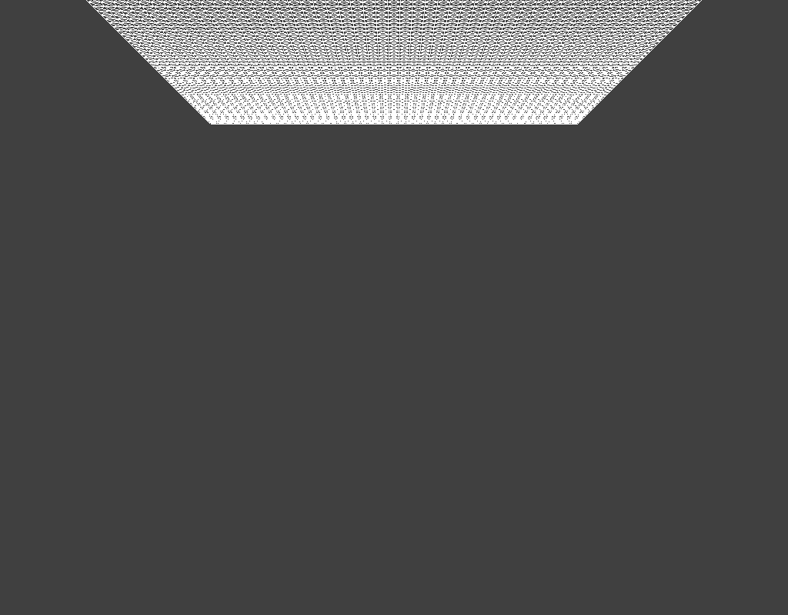 scene/pinned2.json wireframe with structural, shearing, and bending constraints enabled. |
|
Part 2: Simulation via numerical integration
I implemented Cloth::simulate by resetting every point mass's force accumulator at the start of each simulation step. I convert each external acceleration, such as gravity, into force using F = ma, then add those external forces to every point mass. For each enabled spring, I apply Hooke's law along the direction between its endpoint masses. Bending springs use a reduced spring constant, 0.2 * ks, so they are weaker than structural and shearing springs.
Once forces are accumulated, I update unpinned point masses with damped Verlet integration. The previous position is stored in last_position, and the new position uses the current position, the damped displacement from the previous step, and the acceleration from the current forces. Pinned masses are skipped so their positions remain fixed. Finally, I enforce the Provot constraint by shortening any spring whose current length exceeds 110% of its rest length. If neither endpoint is pinned, both endpoints receive half of the correction; if one endpoint is pinned, the full correction goes to the unpinned endpoint.
Lowering ks makes the cloth stretchier and more elastic, so it sags farther and takes on a looser shape before settling. Raising ks makes the springs resist deformation more strongly, so the cloth holds its shape better and appears stiffer. Increasing density makes each point mass heavier, so gravity has more inertia to move and the cloth tends to pull downward more strongly against the springs. Increasing damping removes energy faster, reducing oscillation and making the cloth settle more quickly; very low damping leaves more bouncing and swinging before rest.

ks: looser, stretchier cloth. |

ks: stiffer cloth with less stretch. |
|
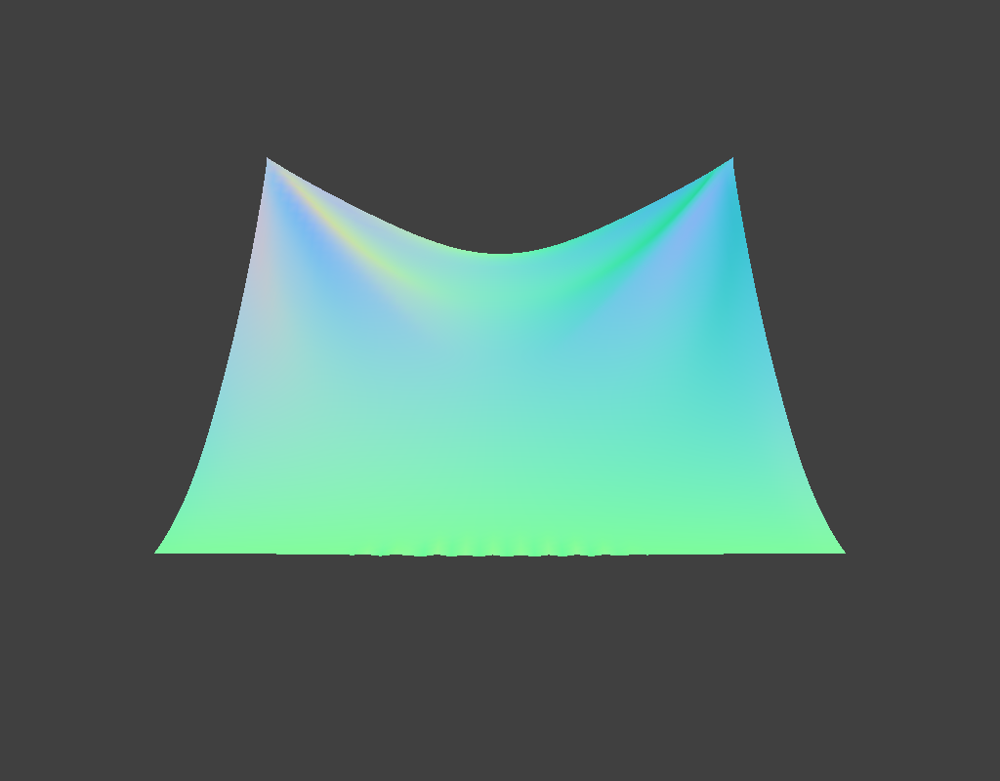 |

scene/pinned4.json shaded cloth at final rest with default parameters. |
Part 3: Handling collisions with other objects
For sphere collisions, I check whether the point mass's current position is inside the sphere by comparing its squared distance from the sphere origin against the squared radius. If the point mass is inside, I project it radially outward to the sphere surface to find the tangent point. I then compute the correction vector from the point mass's previous position to that tangent point, scale the correction by \(1 - f\), where \(f\) is the sphere friction, and set the new position to the previous position plus that scaled correction. This keeps colliding masses outside the sphere while letting friction reduce their sliding motion.
For plane collisions, I compare which side of the plane the point mass occupied before and after the time step. A sign change means the point mass crossed through the plane. In that case, I compute the intersection of the motion segment with the plane, offset that tangent point by the provided SURFACE_OFFSET on the side the point mass came from, and apply the friction-scaled correction from the previous position. Finally, in Cloth::simulate, every point mass is checked against every collision object after Verlet integration so both spheres and planes can constrain the cloth before the spring-length correction runs.

ks = 500: looser cloth with more sagging and stretching. |

ks = 5000: default stiffness with moderate draping. |

ks = 50000: much stiffer cloth with less sagging and sharper tenting around the sphere. |

scene/plane.json. |
The sphere results show the expected stiffness trend. With ks = 500, the cloth deforms more and sinks around the sphere because the springs allow larger extension. With the default ks = 5000, the cloth still drapes naturally but keeps more of its shape. With ks = 50000, the cloth resists stretching strongly, so it stays tighter and forms a more rigid tent-like surface over the sphere.
Part 4: Handling self-collisions
I implemented self-collision with spatial hashing. At the start of the self-collision stage, I rebuild a hash table from 3D grid-cell keys to the point masses inside those cells. The cell dimensions are based on the assignment's suggested values: \(3 * width / num\_width\_points\), \(3 * height / num\_height\_points\), and the larger of those two dimensions for thickness. This keeps the collision search local instead of comparing every point mass against every other point mass.
For each point mass, I look up the masses in the same hash cell and skip the point mass itself. If another point mass is closer than \(2 * thickness\), I compute a correction vector that moves the current mass just far enough away to satisfy that minimum separation. I average all such corrections and divide by the number of simulation steps before applying it, which avoids large sudden jumps during one frame.
|
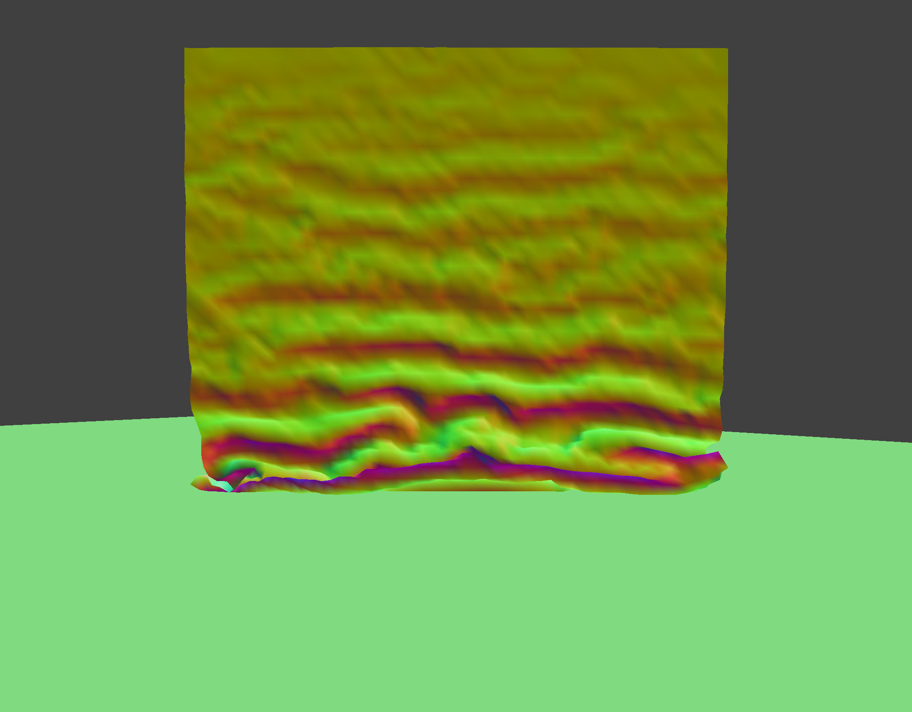 |
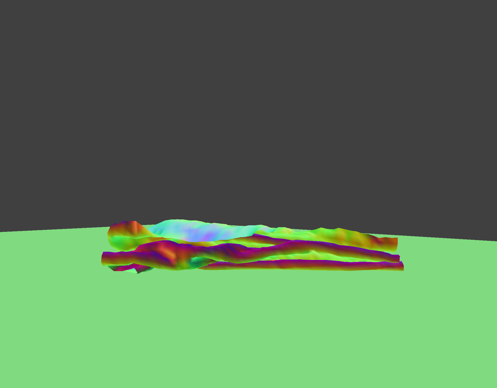 |

|

|

ks comparison: the cloth resists stretching more and forms a stiffer, flatter fold pattern. |
|
Changing density affects how heavy the cloth behaves as it falls. Lower density makes the cloth respond more lightly to the same forces, so the folds look less compressed. Increasing ks makes the springs resist deformation more strongly, so the cloth stretches less and tends to keep broader, stiffer folds. The default settings sit between those behaviors, producing pronounced folds that still flatten over time as the self-collision repulsion continues acting near the plane.
Part 5: Shaders
A shader is a program that runs on the GPU to decide where geometry appears on screen and what color each pixel is. It uses a vertex shader and a fragment shader, which run in parallel across many vertices and pixels. The vertex shader runs once per vertex and transforms its position into screen space, and it can also move the vertex, as in displacement mapping. It passes the vertex's position, normal, and UV to the rasterizer, which interpolates them across each triangle. The fragment shader runs once per pixel and uses those interpolated values to compute the pixel's color. Lighting and material effects come from how it combines the normal with the light direction, view direction, and texture lookups.
Blinn-Phong shading
Blinn-Phong adds three terms to get a surface's color. Ambient is a constant term so surfaces away from the light look dimmer instead of black. Diffuse is brighter where the surface faces the light more directly, so the top of the cloth is brighter than its sides. Specular adds highlights where the normal is close to the half-vector between the light and view directions, which creates the bright streaks on the cloth's folds.

|
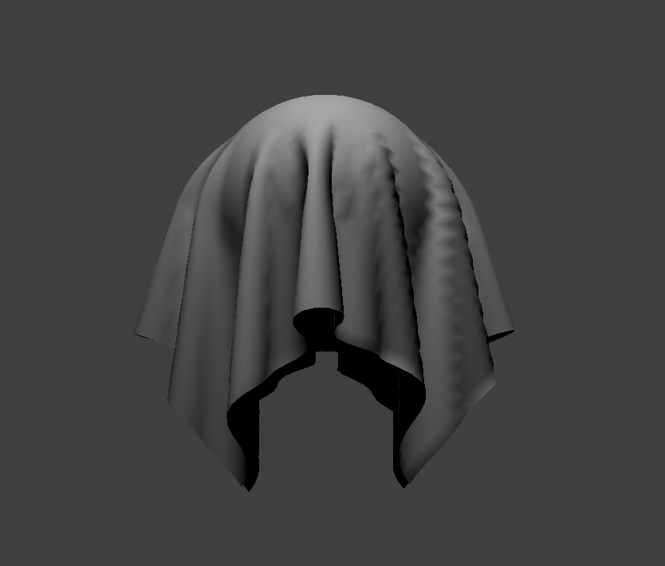 |
|
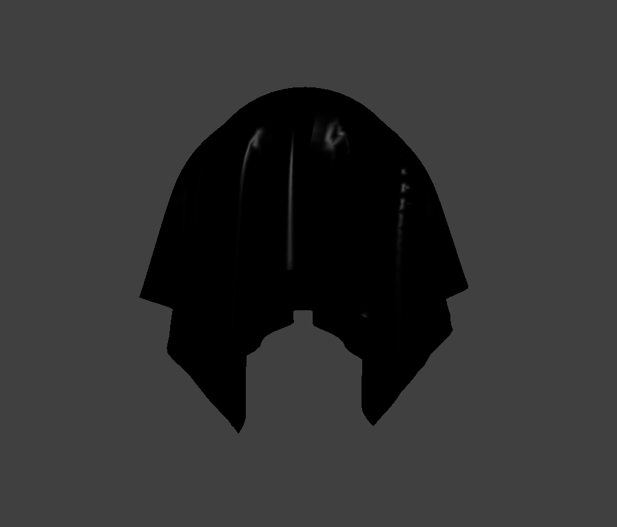 |
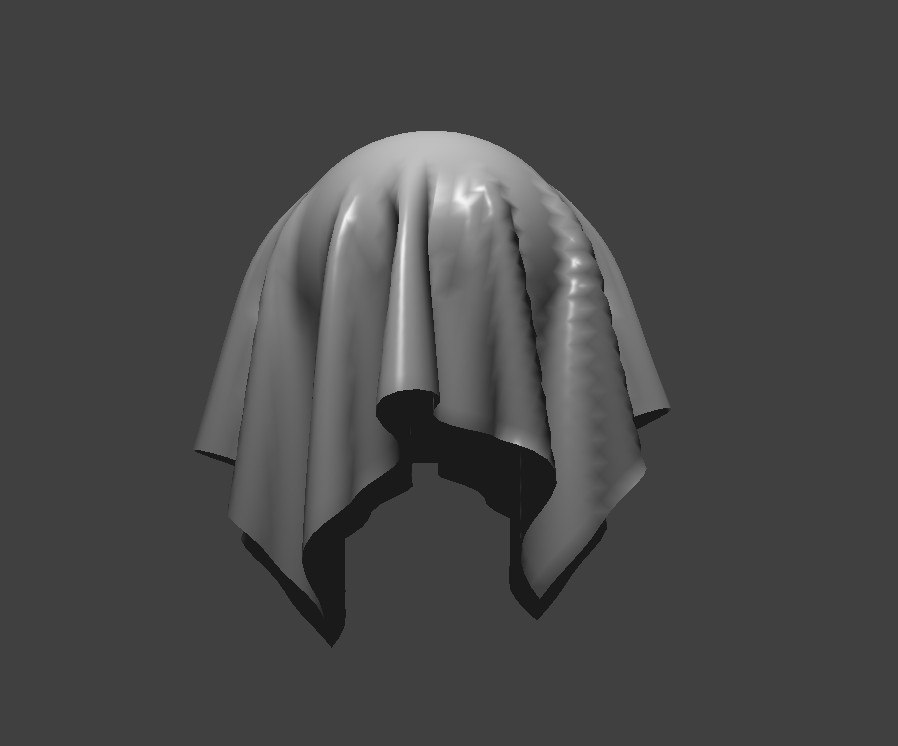 |
Texture mapping
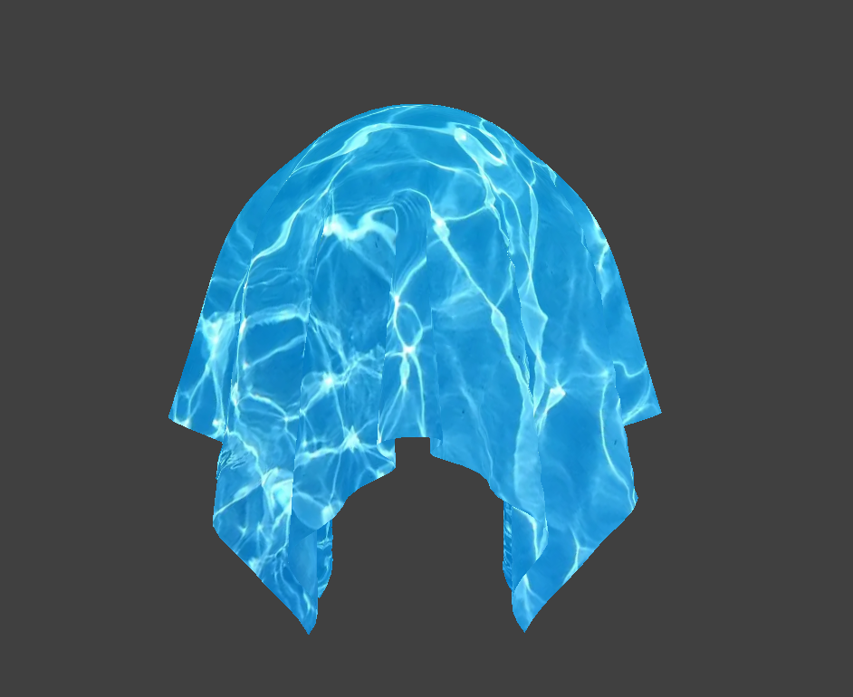
Bump and displacement mapping
|
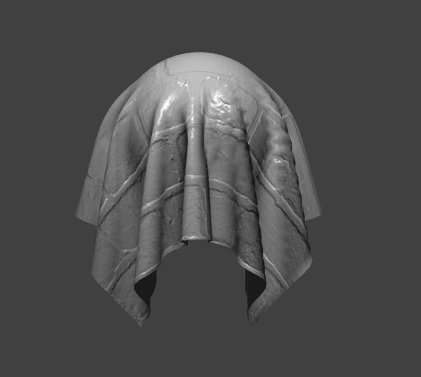 |

|
|
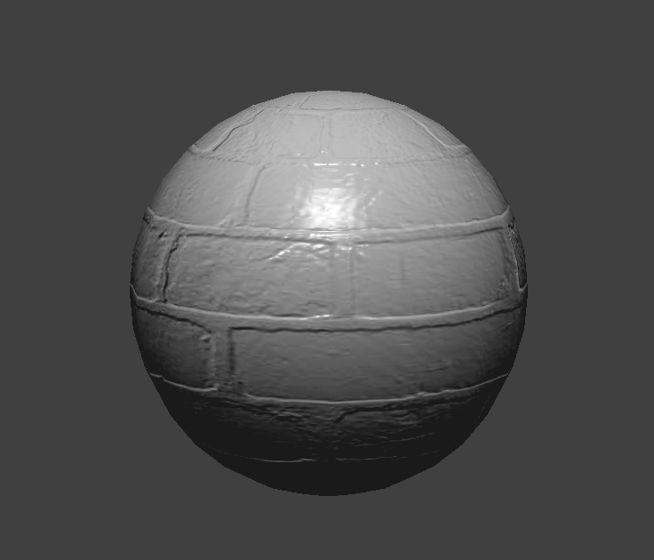 -o 16 -a 16. |
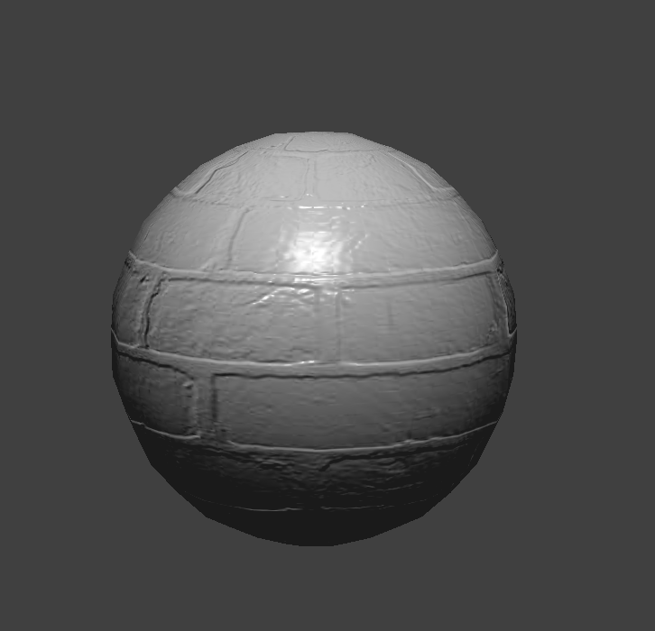 -o 16 -a 16. |
|
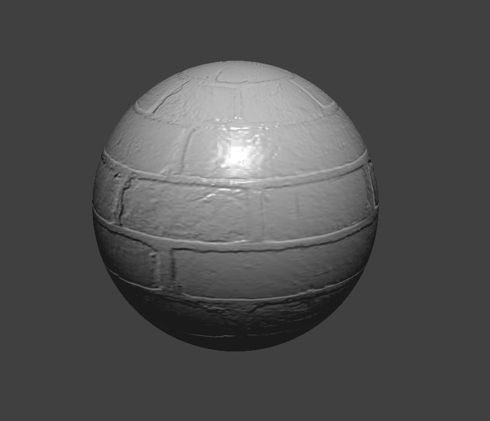 -o 128 -a 128. |
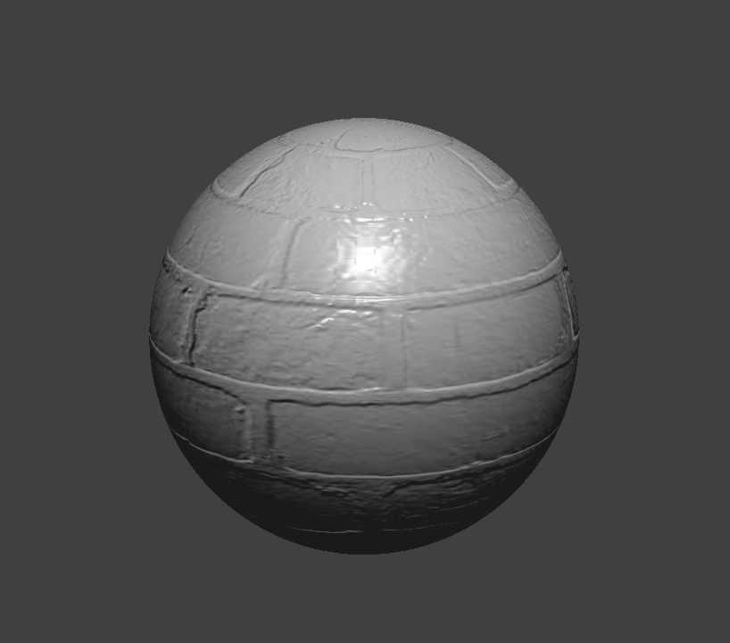 -o 128 -a 128. |
The two shaders looked almost the same because the product of the normal and height scaling was the same for both. However, they had different geometries because only displacement changes the mesh itself. Bump mapping only changed lighting, so the outline of the sphere stayed round, whereas displacement moved real vertices, so it depended on mesh resolution. At 16×16 we couldn't really see this because there were too few vertices, but this was much more visible at 128×128 resolution.
Environment-mapped reflections
|
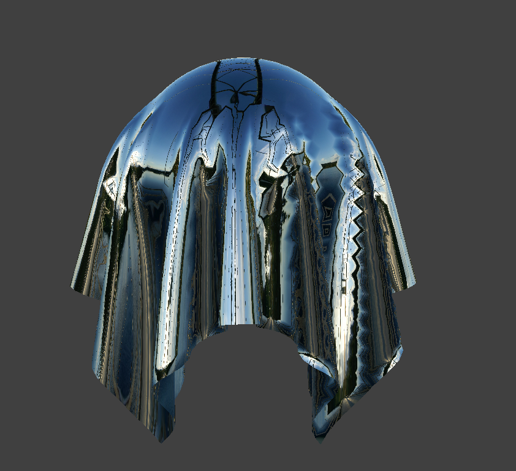 |
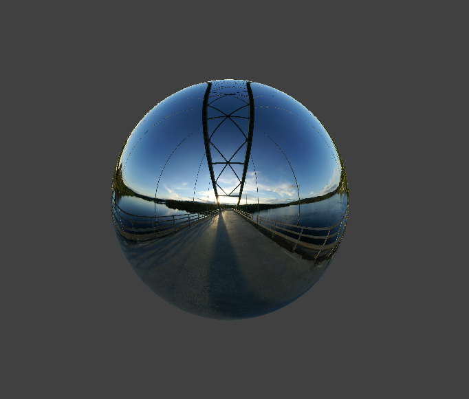 |
Extra credit: Fresnel water shader
For the custom shader, I blended the water texture with the environment reflection using Schlick's Fresnel approximation, \(F = F_0 + (1 - F_0)(1 - n \cdot v)^5\) with \(F_0 = 0.1\). Surfaces facing the camera mostly show the water texture, and surfaces at grazing angles become more reflective, like looking at real water from a shallow angle. I also added a specular highlight to make the surface look more reflective and wet.

|
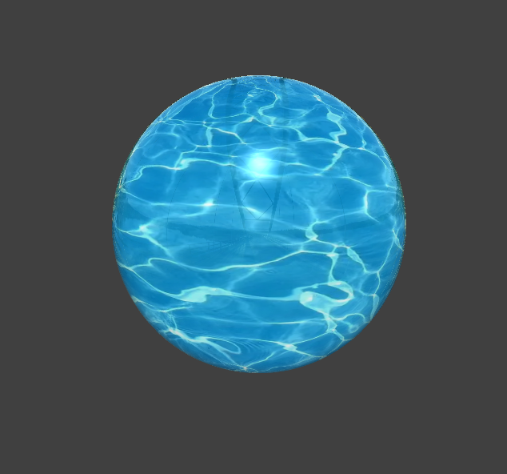 |
(Optional) Part 6: Extra Credit - Additional cloth simulation features!
Wind
We added wind to the simulator. Each point mass gets a force along its normal based on how much of the wind hits that part of the cloth head-on, using the wind relative to the point's own velocity. Parts facing the wind catch more of it, and parts edge-on to it catch almost none. To make the wind vary across space, its speed is scaled by a gust factor that depends on each point's position and the elapsed time, so gusts move across the cloth instead of pushing it all evenly. We also added wind x, y, z and strength controls to the GUI.
With wind at (4, 4, 0) m/s and strength 80, the cloth's corners lifted and flared out. We left it running and watched the cloth get dragged more and more sideways until it fell!
|
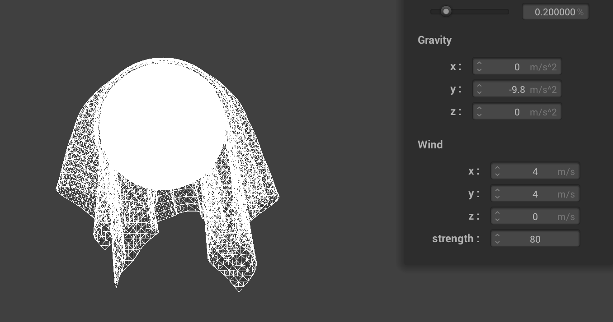 |

|

|
|
AI Acknowledgement
We used Claude to explain concepts such as the TBN matrix, cube map reflections, and the difference between bump and displacement mapping, and to help debug code